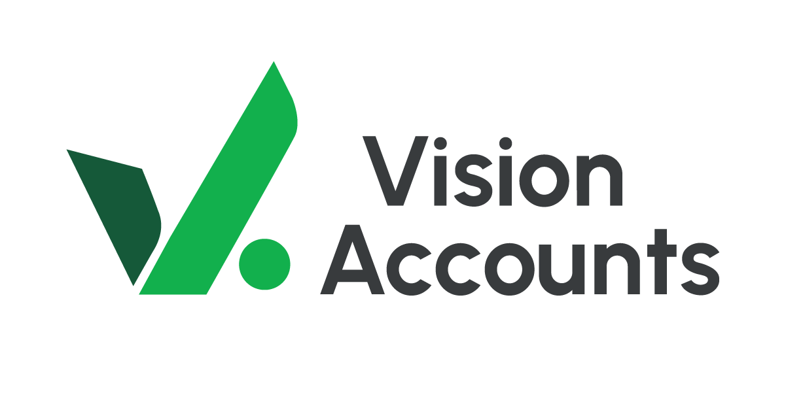
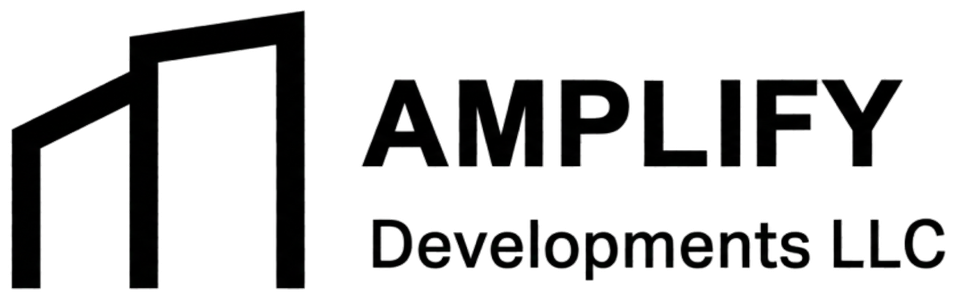

UNARA / DIRECCIÓN INTEGRALCriterio.
Coordinación.
Visibilidad.
IMAGEN CONCEPTUALCoordinación.
Visibilidad.
Una dirección, de principio a fin.
UNA DIRECCIÓN / DOS ESPECIALIDADES
 UNARA
UNARASI APLICA

Empresa, contabilidad y fiscalidad
SI APLICA
Ruta migratoria
Las decisiones legales, fiscales y migratorias se revisan según el caso concreto.
EL FILTROAcceso
Capacidad
Demanda
Capacidad
Demanda
BÚSQUEDA Y DESARROLLO
IMAGEN CONCEPTUALANTES DE OBRADiseño
Presupuesto
Calendario
Presupuesto
Calendario
COORDINACIÓN
INTERIORISMO / SI APLICA
CONSTRUCCIÓN

A / VENDERPrecio de mercado.
Resultado neto.
Resultado neto.
B / CONSERVARContratos, NOI y
valor futuro.
valor futuro.